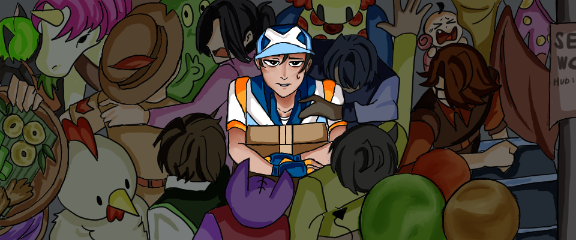

1. Deskripsi

Kamu adalah programmer Java yang sebelumnya sudah mengembangkan beberapa program untuk perusahaan ekspedisi X-Press. Temanmu, Randy, baru diterima sebagai kurir spesialis divisi Cash On Delivery. Suatu hari ia datang kalang kabut: aplikasi X-Hub miliknya mengalami bug parah!
X-Hub merekomendasikan jalur terbaik memakai ADT Graph berbobot. Sebagian jalan hanya bisa dilewati satu arah (proyek galian mangkrak, jalur tikus, dan sebagainya), sehingga setiap jalan dicatat per arah. Kurir harus pulang lagi, jadi yang dicari adalah rute titik pengantaran → tujuan → titik pengantaran, dengan jalur pergi dan jalur kembali dihitung sendiri-sendiri.
Sebelum mencari jalur terbaik, sistem wajib menelusuri semua titik yang bisa dijangkau secara BFS.

Tugasmu: perbaiki sistem rekomendasi jalur milik Randy yang malang itu!
2. Definisi

-
Graph berbobot per arah:
addAdjList(a, b, w)hanya membuat jalana → bdengan waktu tempuhw. Jalan dua arah ditulis dua kali (bobot boleh berbeda, misalnya karena tanjakan atau macet). Jalan satu arah ditulis sekali. -
Jalur pergi adalah jalur
a → bdengan total bobot terkecil. Jalur kembali adalah jalurb → adengan total bobot terkecil. Keduanya dicari terpisah, jadi rutenya bisa berbeda, dan keduanya harus ada. -
Indeks vertex mengikuti urutan masuk ke graph
(urutan input), bukan urutan alfabet. Vertex pertama berindeks
0. -
BFS dimulai dari vertex berindeks
0, mengikuti arah jalan. Tetangga dikunjungi dari indeks terkecil ke terbesar. Hanya vertex yang terjangkau yang dicetak. - Jalur pergi dan jalur kembali pada setiap query dijamin tunggal (tidak ada dua jalur dengan total bobot terkecil yang sama).
3. Operasi yang Harus Dibuat
Kamu mengisi Graph.java dan
Queue.java (keduanya diberikan kosong), serta
melengkapi bagian TODO pada Main.java.
Rancang atributnya sendiri (disarankan adjacency matrix,
maksimum 26 vertex). Kelas Graph wajib memiliki kontrak
berikut:
public class Graph {
public Graph() // konstruktor tanpa parameter
public void addVertex(char a)
public void addAdjList(char a, char b, int bobot)
public void bestRoute(char a, char b)
public void bfs()
}
-
addVertex(char a): menambah vertexapada indekssize, lalu menaikkansize. Jika graph penuh (26 vertex), vertex tidak ditambahkan. -
addAdjList(char a, char b, int bobot): membuat jalan satu araha → bberbobotbobot. Jika salah satu vertex belum ada, tambahkan dulu denganaddVertex. -
bestRoute(char a, char b): mencari jalur pergia → bdan jalur kembalib → adengan algoritma Dijkstra berbasis array (tanpa priority queue), lalu mencetak hasilnya satu baris diikuti baris baru. LabelJalur Terbaik dari ... :dicetak olehMain.Kondisi Yang dicetak adanbsamaSatu vertex saja, contoh CJalur pergi dan kembali ada Rantai pergi-pulang, titik tujuan ditulis sekali, dipisah ->. Contoh:A -> B -> E -> D -> ASalah satunya (atau keduanya) tidak ada Jalur Pergi/Kembali tidak ditemukan! -
bfs(): menelusuri graph secara Breadth-First dari indeks0memakaiQueuebuatanmu sendiri.-
Tandai vertex berindeks
0sebagaivisited, cetak, lalu masukkan ke queue. -
Selama queue belum kosong, ambil satu vertex
v1. -
Kunjungi semua tetangga
v1yang belum dikunjungi dari indeks terkecil: tandaivisited, cetak, masukkan ke queue. -
Setelah queue kosong, cetak baris baru dan kembalikan
semua
visitedmenjadifalse.
->, tanpa panah atau spasi di akhir baris. -
Tandai vertex berindeks
4. Format Input dan Output
Format Input:
-
Baris 1: tiga bilangan bulat
N M Q(jumlah vertex, jumlah jalan, jumlah query). - Baris 2: N vertex dipisahkan spasi, sesuai urutan penambahan.
-
Baris 3 sampai M+2:
a b bobot, yaitu jalan satu arah dariakeb. -
Baris M+3 sampai M+Q+2:
a b, yaitu titik pengantaran dan titik tujuan.
Format Output:
-
Baris 1:
BFS :diikuti hasil BFS dalam satu baris. -
Baris 2 sampai Q+1:
Jalur Terbaik dari a dan b :diikuti rantai pergi-pulang, atauJalur Pergi/Kembali tidak ditemukan!.
5. Batasan (Constraints)

-
1 ≤ N ≤ 26,0 ≤ M ≤ N(N-1),1 ≤ Q ≤ 20, bobot1 ≤ w ≤ 100. -
Vertex berupa satu huruf kapital dan unik. Tidak
ada self-loop maupun jalan ganda untuk pasangan arah yang
sama. Semua vertex pada jalan dan query dijamin terdaftar. Query
boleh memakai
asama denganb. - Graph belum tentu terhubung.
-
Struktur kelas dipisah ketat menjadi 3 berkas:
Graph.java,Queue.java,Main.java. -
Soal dikerjakan from scratch. Dilarang memakai
library bawaan Java seperti
ArrayList,LinkedList,HashMap,PriorityQueue,java.util.Stack,java.util.Queue,java.util.Arrays, danjava.util.Collections.java.util.Scannerhanya boleh diMain.java. -
Pastikan output sesuai spesifikasi spasi (
BFS :,->, tanpa spasi tersisa di akhir baris) agar lulus pengujian VPL.
6. Contoh Input dan Output
5 10 2 A B C D E A B 2 B A 3 A C 6 C A 4 B D 3 D B 6 C D 1 D C 2 D E 4 E D 6 A E B C
BFS : A -> B -> C -> D -> E Jalur Terbaik dari A dan E : A -> B -> D -> E -> D -> C -> A Jalur Terbaik dari B dan C : B -> D -> C -> A -> B
6 7 3 S A B C D E S A 4 A B 3 B A 3 S C 9 C B 2 D E 5 E D 5 S B S D E D
BFS : S -> A -> C -> B Jalur Terbaik dari S dan B : Jalur Pergi/Kembali tidak ditemukan! Jalur Terbaik dari S dan D : Jalur Pergi/Kembali tidak ditemukan! Jalur Terbaik dari E dan D : E -> D -> E
5 7 3 A B C D E A E 10 E A 1 A B 2 B C 2 C D 2 D E 2 B D 7 A E C C B E
BFS : A -> B -> E -> C -> D Jalur Terbaik dari A dan E : A -> B -> C -> D -> E -> A Jalur Terbaik dari C dan C : C Jalur Terbaik dari B dan E : B -> C -> D -> E -> A -> B
7. Penjelasan Contoh
Contoh 1 (A B C D E = indeks 0
sampai 4)
-
BFS:
AmengunjungiBdanClebih dulu, laluD, laluE. -
Query
A E: pergiA -> B -> D -> Eberbobot 2 + 3 + 4 = 9 (lebih murah dariA -> C -> D -> E= 11). KembaliE -> D -> C -> Aberbobot 6 + 2 + 4 = 12 (lebih murah dariE -> D -> B -> A= 15). Rute kembali berbeda dari rute pergi. -
Query
B C: pergiB -> D -> C= 5, kembaliC -> A -> B= 4 + 2 = 6 (lebih murah dariC -> D -> B= 7).

Contoh 2 (S A B C D E)
-
S -> AdanS -> Cadalah jalan satu arah.DdanEberada di komponen lain sehingga tidak pernah tercetak oleh BFS. -
Query
S B: pergi ada (S -> A -> B= 7), tetapi kembali tidak ada karena tidak ada jalan menujuS. HasilnyaJalur Pergi/Kembali tidak ditemukan!. -
Query
S D: kedua komponen tidak terhubung. QueryE D: pergi 5 dan kembali 5, rantainyaE -> D -> E.
Contoh 3 (A B C D E)
-
Jalur dengan total bobot terkecil belum tentu punya vertex
paling sedikit. Query
A E: jalan langsungA -> Eberbobot 10 kalah dariA -> B -> C -> D -> E= 8. Kembali langsungE -> A= 1. -
Query
C C: asal dan tujuan sama, cukup cetakC. -
Query
B E: pergiB -> C -> D -> E= 6 (lebih murah dariB -> D -> E= 9), kembaliE -> A -> B= 3.

Selamat mengerjakan, semoga gaji Randy aman bulan ini!
8. Berkas yang Diberikan
Kamu menerima tiga berkas. Ketiganya wajib dikumpulkan ke VPL (requested files): Graph.java, Queue.java, dan
Main.java.
| Berkas | Kondisi | Tugasmu |
|---|---|---|
Graph.java |
Kosong | Implementasikan seluruh Graph |
Queue.java |
Kosong | Rancang Queue untuk BFS |
Main.java |
Setengah jadi | Lengkapi dua TODO |
Kosong. Tulis atribut, konstruktor
Graph(), serta method addVertex,
addAdjList, bestRoute, dan
bfs sesuai kontrak pada Bagian 3.
public class Graph {
// TODO: tulis atribut, konstruktor Graph(), dan semua method di sini
}
Kosong. Rancang sendiri queue-nya
(from scratch) lalu pakai di bfs(). Nama method dan
bentuk kelasnya bebas.
public class Queue {
// TODO: rancang sendiri struktur data Queue (from scratch) di sini
}
Setengah jadi. Pembacaan N M Q dan
daftar vertex sudah ada. Lengkapi dua bagian TODO.
Format label cetak harus persis sesuai Bagian 4.
import java.util.Scanner;
public class Main {
public static void main(String[] args) {
Scanner sc = new Scanner(System.in);
Graph g = new Graph();
int n = sc.nextInt(); // jumlah vertex
int m = sc.nextInt(); // jumlah jalan
int q = sc.nextInt(); // jumlah query
// Baca N vertex sesuai urutan input
for (int i = 0; i < n; i++) {
char v = sc.next().charAt(0);
g.addVertex(v);
}
// TODO 1: baca M jalan, masing-masing "a b bobot",
// lalu masukkan ke graph dengan g.addAdjList(...)
// Cetak hasil BFS
System.out.print("BFS : ");
g.bfs();
// TODO 2: untuk setiap Q query "a b":
// - baca a dan b
// - cetak label "Jalur Terbaik dari a dan b : " (tanpa baris baru)
// - panggil g.bestRoute(a, b)
sc.close();
}
}
Selain java.util.Scanner di Main.java,
jangan menambah import apa pun.
9. Kasus Uji
Ada 11 kasus uji dengan tingkat kesulitan tinggi. Pada setiap query, jalur pergi dan jalur kembali dijamin tunggal. Klik judul kasus untuk membuka input dan output.
| No | Nama | N M Q | Tingkat |
|---|---|---|---|
| 1 | Urutan Bukan Alfabet | 8 22 6 |
LV 3 |
| 2 | Jalan Memutar | 7 16 6 |
LV 3 |
| 3 | Jalan Satu Arah | 7 8 6 |
LV 4 |
| 4 | Pergi Beda Rute dengan Kembali | 6 14 6 |
LV 4 |
| 5 | Terpisah dan Terisolasi | 9 10 6 |
LV 4 |
| 6 | Vertex Nol Buntu | 7 18 6 |
LV 4 |
| 7 | Sendirian | 1 0 2 |
LV 2 |
| 8 | Dua Titik Satu Jalan | 2 1 3 |
LV 3 |
| 9 | Ular Maksimum | 26 50 6 |
LV 5 |
| 10 | Padat 26 Vertex | 26 345 20 |
LV 5 |
| 11 | Labirin Siklus | 14 26 20 |
LV 5 |
LV 3 Kasus Uji 1: Urutan Bukan Alfabet N=8 M=22 Q=6
Indeks vertex mengikuti urutan input dan tetangga BFS diurutkan menurut indeks, bukan huruf.
8 22 6 R K T M B Z A Q R T 4 T R 4 R K 7 K R 5 R M 9 M R 9 T B 3 B T 6 K B 2 B K 2 M Z 5 Z M 8 B Z 4 Z B 4 Z A 6 A Z 3 B A 11 A B 11 T Q 16 Q T 16 A Q 2 Q A 2 R A A R K Q Q R T T M B
BFS : R -> K -> T -> M -> B -> Q -> Z -> A Jalur Terbaik dari R dan A : R -> T -> B -> Z -> A -> Z -> B -> K -> R Jalur Terbaik dari A dan R : A -> Z -> B -> K -> R -> T -> B -> Z -> A Jalur Terbaik dari K dan Q : K -> B -> Z -> A -> Q -> A -> Z -> B -> K Jalur Terbaik dari Q dan R : Q -> A -> Z -> B -> K -> R -> T -> B -> Z -> A -> Q Jalur Terbaik dari T dan T : T Jalur Terbaik dari M dan B : M -> Z -> B -> Z -> M
LV 3 Kasus Uji 2: Jalan Memutar N=7 M=16 Q=6
Edge langsung berbobot besar kalah dari rute panjang yang total bobotnya lebih kecil.
7 16 6 A B C D E F G A G 90 G A 85 A B 10 B A 11 B C 10 C B 11 C D 10 D C 11 D E 10 E D 11 E F 10 F E 11 F G 10 G F 11 B D 25 D F 25 A G G A B F C E A D F B
BFS : A -> B -> G -> C -> D -> F -> E Jalur Terbaik dari A dan G : A -> B -> C -> D -> E -> F -> G -> F -> E -> D -> C -> B -> A Jalur Terbaik dari G dan A : G -> F -> E -> D -> C -> B -> A -> B -> C -> D -> E -> F -> G Jalur Terbaik dari B dan F : B -> C -> D -> E -> F -> E -> D -> C -> B Jalur Terbaik dari C dan E : C -> D -> E -> D -> C Jalur Terbaik dari A dan D : A -> B -> C -> D -> C -> B -> A Jalur Terbaik dari F dan B : F -> E -> D -> C -> B -> C -> D -> E -> F
LV 4 Kasus Uji 3: Jalan Satu Arah N=7 M=8 Q=6
Jalur pergi ada tetapi jalur kembali tidak ada (dan sebaliknya) karena jalan satu arah.
7 8 6 H I J K L M N H I 3 I J 4 J K 2 K L 5 L M 1 M N 6 J I 4 N M 6 H N I J H J N M L N J H
BFS : H -> I -> J -> K -> L -> M -> N Jalur Terbaik dari H dan N : Jalur Pergi/Kembali tidak ditemukan! Jalur Terbaik dari I dan J : I -> J -> I Jalur Terbaik dari H dan J : Jalur Pergi/Kembali tidak ditemukan! Jalur Terbaik dari N dan M : N -> M -> N Jalur Terbaik dari L dan N : Jalur Pergi/Kembali tidak ditemukan! Jalur Terbaik dari J dan H : Jalur Pergi/Kembali tidak ditemukan!
LV 4 Kasus Uji 4: Pergi Beda Rute dengan Kembali N=6 M=14 Q=6
Bobot asimetris: rute kembali bukan kebalikan rute pergi.
6 14 6 A B C D E F A B 2 B A 20 B C 2 C B 20 C D 2 D C 20 D E 2 E D 20 E F 2 F E 20 F A 2 A F 20 A D 11 D A 3 A D B E D A C F F C A A
BFS : A -> B -> D -> F -> C -> E Jalur Terbaik dari A dan D : A -> B -> C -> D -> A Jalur Terbaik dari B dan E : B -> C -> D -> E -> F -> A -> B Jalur Terbaik dari D dan A : D -> A -> B -> C -> D Jalur Terbaik dari C dan F : C -> D -> E -> F -> A -> B -> C Jalur Terbaik dari F dan C : F -> A -> B -> C -> D -> E -> F Jalur Terbaik dari A dan A : A
LV 4 Kasus Uji 5: Terpisah dan Terisolasi N=9 M=10 Q=6
Graph tidak terhubung: BFS hanya mencetak komponen vertex 0, ada vertex terisolasi.
9 10 6 P Q R S T U V W X P Q 3 Q P 3 Q R 4 R Q 4 P R 9 R P 9 S T 5 T S 5 V W 2 W X 3 P R Q S S T U U U P V X
BFS : P -> Q -> R Jalur Terbaik dari P dan R : P -> Q -> R -> Q -> P Jalur Terbaik dari Q dan S : Jalur Pergi/Kembali tidak ditemukan! Jalur Terbaik dari S dan T : S -> T -> S Jalur Terbaik dari U dan U : U Jalur Terbaik dari U dan P : Jalur Pergi/Kembali tidak ditemukan! Jalur Terbaik dari V dan X : Jalur Pergi/Kembali tidak ditemukan!
LV 4 Kasus Uji 6: Vertex Nol Buntu N=7 M=18 Q=6
Vertex 0 hanya punya jalan masuk, sehingga BFS hanya mencetak satu vertex.
7 18 6 Z A B C D E F A Z 5 B Z 3 A B 7 B A 4 A C 2 C A 9 B D 6 D B 5 C D 3 D C 3 C E 8 E C 2 D F 4 F D 10 E F 2 F E 6 B E 12 E B 12 Z A A Z B F F B A E C D
BFS : Z Jalur Terbaik dari Z dan A : Jalur Pergi/Kembali tidak ditemukan! Jalur Terbaik dari A dan Z : Jalur Pergi/Kembali tidak ditemukan! Jalur Terbaik dari B dan F : B -> D -> F -> D -> B Jalur Terbaik dari F dan B : F -> D -> B -> D -> F Jalur Terbaik dari A dan E : A -> C -> E -> C -> A Jalur Terbaik dari C dan D : C -> D -> C
LV 2 Kasus Uji 7: Sendirian N=1 M=0 Q=2
Batas bawah: N = 1, M = 0, query dengan asal sama dengan tujuan.
1 0 2 X X X X X
BFS : X Jalur Terbaik dari X dan X : X Jalur Terbaik dari X dan X : X
LV 3 Kasus Uji 8: Dua Titik Satu Jalan N=2 M=1 Q=3
Satu jalan satu arah antara dua vertex, dengan vertex 0 sebagai asal.
2 1 3 B A B A 1 A B B A A A
BFS : B -> A Jalur Terbaik dari A dan B : Jalur Pergi/Kembali tidak ditemukan! Jalur Terbaik dari B dan A : Jalur Pergi/Kembali tidak ditemukan! Jalur Terbaik dari A dan A : A
LV 5 Kasus Uji 9: Ular Maksimum N=26 M=50 Q=6
Total bobot hingga 5000: nilai INF yang terlalu kecil membuat jawaban salah. Rantai terpanjang 26 vertex.
26 50 6 A B C D E F G H I J K L M N O P Q R S T U V W X Y Z A B 100 B A 100 B C 100 C B 100 C D 100 D C 100 D E 100 E D 100 E F 100 F E 100 F G 100 G F 100 G H 100 H G 100 H I 100 I H 100 I J 100 J I 100 J K 100 K J 100 K L 100 L K 100 L M 100 M L 100 M N 100 N M 100 N O 100 O N 100 O P 100 P O 100 P Q 100 Q P 100 Q R 100 R Q 100 R S 100 S R 100 S T 100 T S 100 T U 100 U T 100 U V 100 V U 100 V W 100 W V 100 W X 100 X W 100 X Y 100 Y X 100 Y Z 100 Z Y 100 A Z Z A A M N Z Z Z H T
BFS : A -> B -> C -> D -> E -> F -> G -> H -> I -> J -> K -> L -> M -> N -> O -> P -> Q -> R -> S -> T -> U -> V -> W -> X -> Y -> Z Jalur Terbaik dari A dan Z : A -> B -> C -> D -> E -> F -> G -> H -> I -> J -> K -> L -> M -> N -> O -> P -> Q -> R -> S -> T -> U -> V -> W -> X -> Y -> Z -> Y -> X -> W -> V -> U -> T -> S -> R -> Q -> P -> O -> N -> M -> L -> K -> J -> I -> H -> G -> F -> E -> D -> C -> B -> A Jalur Terbaik dari Z dan A : Z -> Y -> X -> W -> V -> U -> T -> S -> R -> Q -> P -> O -> N -> M -> L -> K -> J -> I -> H -> G -> F -> E -> D -> C -> B -> A -> B -> C -> D -> E -> F -> G -> H -> I -> J -> K -> L -> M -> N -> O -> P -> Q -> R -> S -> T -> U -> V -> W -> X -> Y -> Z Jalur Terbaik dari A dan M : A -> B -> C -> D -> E -> F -> G -> H -> I -> J -> K -> L -> M -> L -> K -> J -> I -> H -> G -> F -> E -> D -> C -> B -> A Jalur Terbaik dari N dan Z : N -> O -> P -> Q -> R -> S -> T -> U -> V -> W -> X -> Y -> Z -> Y -> X -> W -> V -> U -> T -> S -> R -> Q -> P -> O -> N Jalur Terbaik dari Z dan Z : Z Jalur Terbaik dari H dan T : H -> I -> J -> K -> L -> M -> N -> O -> P -> Q -> R -> S -> T -> S -> R -> Q -> P -> O -> N -> M -> L -> K -> J -> I -> H
LV 5 Kasus Uji 10: Padat 26 Vertex N=26 M=345 Q=20
Ukuran maksimum: N = 26, ratusan jalan, 20 query, urutan vertex diacak.
26 345 20 G Q X O B F V K J N Z M D I W U A C Y P T L E R S H Z E 75 Z T 90 I M 40 E X 31 B M 80 C Y 6 F T 26 Q E 36 E H 96 O M 47 U D 65 S Q 99 P Z 54 N I 96 C S 15 X L 54 B K 25 T M 11 W X 64 W I 78 F U 69 Q L 76 U V 99 J Y 99 V A 45 I V 43 E C 76 H A 36 I P 35 K C 72 W L 57 R V 27 L Q 15 V S 11 G I 18 R U 37 K Z 3 Y U 7 I X 48 T G 31 T J 25 P Q 53 A X 77 H U 46 Y P 97 D B 17 X W 65 E T 13 D K 56 C K 3 T N 14 Q H 10 O P 35 N L 64 M H 43 C J 52 W D 96 K D 76 G R 30 H Q 63 L C 39 Q F 42 H P 41 D Y 44 O F 63 S D 64 M Y 55 J B 31 O U 4 Z L 77 D W 87 O Z 77 L B 33 C M 78 S U 81 E S 61 R D 21 W N 90 D M 99 C D 63 W Z 54 S G 7 Y F 72 P M 57 Y W 65 C U 91 G T 50 C E 50 T C 37 A M 6 G A 34 K G 59 G F 98 X Z 59 O J 48 R K 98 C P 4 N T 20 I E 65 I N 39 I F 72 S P 18 M C 6 T O 79 N H 93 H M 24 O W 49 A N 97 Y N 56 N Q 24 B S 97 E L 20 N M 31 W Q 99 P L 22 D L 64 D I 58 R F 53 M Z 25 S K 44 G U 18 N F 48 B C 73 U L 47 G Y 81 T P 72 Y D 4 T I 89 B Z 83 H L 30 F J 89 K I 55 K M 69 S C 98 U S 3 R X 26 Z Q 97 H G 22 W U 51 A V 27 F L 16 Y X 60 U G 64 J V 12 S F 24 K P 60 L G 80 E P 3 D G 49 B F 29 H Y 68 W B 35 O I 77 B E 92 P R 60 L W 77 V G 81 C F 59 D R 38 L V 88 I G 83 U F 82 I R 90 E U 100 N P 83 A B 11 F Y 70 B Q 95 M E 46 M P 11 P V 95 F P 8 K H 14 L H 67 R E 81 A Y 84 X G 69 B R 96 Z X 75 V U 21 I U 24 A T 97 K F 48 X U 82 E R 67 G N 93 M J 28 R G 63 A H 48 D Q 27 C I 3 Q M 16 Y A 66 P I 35 P N 24 A G 45 B T 80 F C 17 O N 59 L S 83 O D 98 U A 37 P S 89 P X 50 M T 34 W S 71 O T 24 L A 70 J Z 4 Z A 49 S E 97 E F 27 F W 85 A W 61 E G 45 J D 15 K N 89 M B 30 J X 76 T S 69 A E 59 W T 38 Z U 35 V X 97 W Y 23 G D 74 J S 42 F A 79 A P 3 I H 43 X F 6 N O 90 S I 34 Z P 19 Y R 40 Q W 9 B D 17 N G 10 O G 81 V W 65 E O 11 G K 100 O Y 65 L F 60 R C 46 M R 94 C R 22 Y J 12 T A 2 V P 25 X C 39 T Z 40 O Q 46 X D 77 X Y 34 O S 43 H Z 81 Q Z 74 V D 5 U J 23 C X 1 B G 22 U O 86 R P 32 F I 65 L T 97 F Z 56 B Y 53 V C 50 S M 34 V K 42 S V 36 X K 47 R W 70 F Q 44 G M 55 S O 47 Y V 44 V N 8 F D 96 F K 32 F E 36 S W 4 J L 71 V O 35 X Q 26 L E 71 L M 78 M I 80 E B 42 C H 16 Y T 62 H F 86 C G 47 X R 49 R N 49 G J 35 B I 67 B J 74 T W 20 R Q 45 K O 6 J M 16 P J 71 O V 8 A Z 41 N U 73 A D 26 B P 1 Q A 55 M Q 52 L P 45 U Z 25 R I 60 R A 60 H T 5 Q P 79 K W 17 Z Y 42 X B 34 D J 68 U P 12 U B 77 V M 7 I T 7 D V 36 V L 17 C W 41 H D 18 T F 94 Q U 20 W P 33 O B 91 C B 48 O R 77 Z C 73 M G 93 B U 45 P G 38 B N 36 L U 49 R B 14 E D 25 D Z 90 Q D 82 N M W L A K V Y N Z Y B Y C M P A M Z S Y R R A V W Q R I N T V U V F O W O A D
BFS : G -> F -> K -> J -> N -> M -> D -> I -> U -> A -> Y -> T -> R -> Q -> Z -> W -> C -> P -> L -> E -> O -> H -> X -> B -> V -> S Jalur Terbaik dari N dan M : N -> T -> A -> M -> C -> I -> T -> N Jalur Terbaik dari W dan L : W -> P -> L -> Q -> W Jalur Terbaik dari A dan K : A -> M -> C -> K -> H -> T -> A Jalur Terbaik dari V dan Y : V -> M -> C -> Y -> J -> V Jalur Terbaik dari N dan Z : N -> T -> A -> M -> C -> K -> Z -> P -> N Jalur Terbaik dari Y dan B : Y -> D -> B -> F -> C -> Y Jalur Terbaik dari Y dan C : Y -> J -> M -> C -> Y Jalur Terbaik dari M dan P : M -> C -> P -> I -> T -> A -> M Jalur Terbaik dari A dan M : A -> M -> C -> I -> T -> A Jalur Terbaik dari Z dan S : Z -> U -> S -> W -> Y -> J -> Z Jalur Terbaik dari Y dan R : Y -> R -> V -> M -> C -> Y Jalur Terbaik dari R dan A : R -> V -> M -> C -> I -> T -> A -> M -> C -> R Jalur Terbaik dari V dan W : V -> S -> W -> Y -> J -> V Jalur Terbaik dari Q dan R : Q -> M -> C -> R -> Q Jalur Terbaik dari I dan N : I -> T -> N -> G -> I Jalur Terbaik dari T dan V : T -> A -> V -> M -> C -> I -> T Jalur Terbaik dari U dan V : U -> J -> V -> U Jalur Terbaik dari F dan O : F -> C -> K -> O -> V -> M -> C -> X -> F Jalur Terbaik dari W dan O : W -> T -> A -> M -> C -> K -> O -> U -> S -> W Jalur Terbaik dari A dan D : A -> M -> C -> Y -> D -> Q -> H -> T -> A
LV 5 Kasus Uji 11: Labirin Siklus N=14 M=26 Q=20
Graph jarang berisi banyak siklus dan jalan buntu, campuran query yang ditemukan dan tidak.
14 26 20 X Y L K W B F Z T N J R Q A J B 39 Z K 3 T F 40 R Q 26 X Y 84 R L 5 N L 3 A Y 55 B K 95 B N 47 Y N 43 Q J 26 X Z 29 T R 94 Q W 86 F R 71 J F 28 N W 21 F Z 30 B F 100 W F 26 J Y 87 Q Z 79 K R 6 K B 85 Y F 81 Y F A Q L A L B Y N N Q F Y N T K N Y W B W N T Y Z W Y Q X A W X N J X Y F Y A
BFS : X -> Y -> Z -> F -> N -> K -> R -> L -> W -> B -> Q -> J Jalur Terbaik dari Y dan F : Y -> F -> Z -> K -> R -> Q -> J -> Y Jalur Terbaik dari A dan Q : Jalur Pergi/Kembali tidak ditemukan! Jalur Terbaik dari L dan A : Jalur Pergi/Kembali tidak ditemukan! Jalur Terbaik dari L dan B : Jalur Pergi/Kembali tidak ditemukan! Jalur Terbaik dari Y dan N : Y -> N -> W -> F -> Z -> K -> R -> Q -> J -> Y Jalur Terbaik dari N dan Q : N -> W -> F -> Z -> K -> R -> Q -> J -> B -> N Jalur Terbaik dari F dan Y : F -> Z -> K -> R -> Q -> J -> Y -> F Jalur Terbaik dari N dan T : Jalur Pergi/Kembali tidak ditemukan! Jalur Terbaik dari K dan N : K -> B -> N -> W -> F -> Z -> K Jalur Terbaik dari Y dan W : Y -> N -> W -> F -> Z -> K -> R -> Q -> J -> Y Jalur Terbaik dari B dan W : B -> N -> W -> F -> Z -> K -> B Jalur Terbaik dari N dan T : Jalur Pergi/Kembali tidak ditemukan! Jalur Terbaik dari Y dan Z : Y -> F -> Z -> K -> R -> Q -> J -> Y Jalur Terbaik dari W dan Y : W -> F -> Z -> K -> R -> Q -> J -> Y -> N -> W Jalur Terbaik dari Q dan X : Jalur Pergi/Kembali tidak ditemukan! Jalur Terbaik dari A dan W : Jalur Pergi/Kembali tidak ditemukan! Jalur Terbaik dari X dan N : Jalur Pergi/Kembali tidak ditemukan! Jalur Terbaik dari J dan X : Jalur Pergi/Kembali tidak ditemukan! Jalur Terbaik dari Y dan F : Y -> F -> Z -> K -> R -> Q -> J -> Y Jalur Terbaik dari Y dan A : Jalur Pergi/Kembali tidak ditemukan!
VPL vpl_evaluate.cases
semua kasus uji, siap salin
Case = Kasus Uji 1 input = 8 22 6 R K T M B Z A Q R T 4 T R 4 R K 7 K R 5 R M 9 M R 9 T B 3 B T 6 K B 2 B K 2 M Z 5 Z M 8 B Z 4 Z B 4 Z A 6 A Z 3 B A 11 A B 11 T Q 16 Q T 16 A Q 2 Q A 2 R A A R K Q Q R T T M B output =BFS : R -> K -> T -> M -> B -> Q -> Z -> A Jalur Terbaik dari R dan A : R -> T -> B -> Z -> A -> Z -> B -> K -> R Jalur Terbaik dari A dan R : A -> Z -> B -> K -> R -> T -> B -> Z -> A Jalur Terbaik dari K dan Q : K -> B -> Z -> A -> Q -> A -> Z -> B -> K Jalur Terbaik dari Q dan R : Q -> A -> Z -> B -> K -> R -> T -> B -> Z -> A -> Q Jalur Terbaik dari T dan T : T Jalur Terbaik dari M dan B : M -> Z -> B -> Z -> M Case = Kasus Uji 2 input = 7 16 6 A B C D E F G A G 90 G A 85 A B 10 B A 11 B C 10 C B 11 C D 10 D C 11 D E 10 E D 11 E F 10 F E 11 F G 10 G F 11 B D 25 D F 25 A G G A B F C E A D F B output =BFS : A -> B -> G -> C -> D -> F -> E Jalur Terbaik dari A dan G : A -> B -> C -> D -> E -> F -> G -> F -> E -> D -> C -> B -> A Jalur Terbaik dari G dan A : G -> F -> E -> D -> C -> B -> A -> B -> C -> D -> E -> F -> G Jalur Terbaik dari B dan F : B -> C -> D -> E -> F -> E -> D -> C -> B Jalur Terbaik dari C dan E : C -> D -> E -> D -> C Jalur Terbaik dari A dan D : A -> B -> C -> D -> C -> B -> A Jalur Terbaik dari F dan B : F -> E -> D -> C -> B -> C -> D -> E -> F Case = Kasus Uji 3 input = 7 8 6 H I J K L M N H I 3 I J 4 J K 2 K L 5 L M 1 M N 6 J I 4 N M 6 H N I J H J N M L N J H output =BFS : H -> I -> J -> K -> L -> M -> N Jalur Terbaik dari H dan N : Jalur Pergi/Kembali tidak ditemukan! Jalur Terbaik dari I dan J : I -> J -> I Jalur Terbaik dari H dan J : Jalur Pergi/Kembali tidak ditemukan! Jalur Terbaik dari N dan M : N -> M -> N Jalur Terbaik dari L dan N : Jalur Pergi/Kembali tidak ditemukan! Jalur Terbaik dari J dan H : Jalur Pergi/Kembali tidak ditemukan! Case = Kasus Uji 4 input = 6 14 6 A B C D E F A B 2 B A 20 B C 2 C B 20 C D 2 D C 20 D E 2 E D 20 E F 2 F E 20 F A 2 A F 20 A D 11 D A 3 A D B E D A C F F C A A output =BFS : A -> B -> D -> F -> C -> E Jalur Terbaik dari A dan D : A -> B -> C -> D -> A Jalur Terbaik dari B dan E : B -> C -> D -> E -> F -> A -> B Jalur Terbaik dari D dan A : D -> A -> B -> C -> D Jalur Terbaik dari C dan F : C -> D -> E -> F -> A -> B -> C Jalur Terbaik dari F dan C : F -> A -> B -> C -> D -> E -> F Jalur Terbaik dari A dan A : A Case = Kasus Uji 5 input = 9 10 6 P Q R S T U V W X P Q 3 Q P 3 Q R 4 R Q 4 P R 9 R P 9 S T 5 T S 5 V W 2 W X 3 P R Q S S T U U U P V X output =BFS : P -> Q -> R Jalur Terbaik dari P dan R : P -> Q -> R -> Q -> P Jalur Terbaik dari Q dan S : Jalur Pergi/Kembali tidak ditemukan! Jalur Terbaik dari S dan T : S -> T -> S Jalur Terbaik dari U dan U : U Jalur Terbaik dari U dan P : Jalur Pergi/Kembali tidak ditemukan! Jalur Terbaik dari V dan X : Jalur Pergi/Kembali tidak ditemukan! Case = Kasus Uji 6 input = 7 18 6 Z A B C D E F A Z 5 B Z 3 A B 7 B A 4 A C 2 C A 9 B D 6 D B 5 C D 3 D C 3 C E 8 E C 2 D F 4 F D 10 E F 2 F E 6 B E 12 E B 12 Z A A Z B F F B A E C D output =BFS : Z Jalur Terbaik dari Z dan A : Jalur Pergi/Kembali tidak ditemukan! Jalur Terbaik dari A dan Z : Jalur Pergi/Kembali tidak ditemukan! Jalur Terbaik dari B dan F : B -> D -> F -> D -> B Jalur Terbaik dari F dan B : F -> D -> B -> D -> F Jalur Terbaik dari A dan E : A -> C -> E -> C -> A Jalur Terbaik dari C dan D : C -> D -> C Case = Kasus Uji 7 input = 1 0 2 X X X X X output =BFS : X Jalur Terbaik dari X dan X : X Jalur Terbaik dari X dan X : X Case = Kasus Uji 8 input = 2 1 3 B A B A 1 A B B A A A output =BFS : B -> A Jalur Terbaik dari A dan B : Jalur Pergi/Kembali tidak ditemukan! Jalur Terbaik dari B dan A : Jalur Pergi/Kembali tidak ditemukan! Jalur Terbaik dari A dan A : A Case = Kasus Uji 9 input = 26 50 6 A B C D E F G H I J K L M N O P Q R S T U V W X Y Z A B 100 B A 100 B C 100 C B 100 C D 100 D C 100 D E 100 E D 100 E F 100 F E 100 F G 100 G F 100 G H 100 H G 100 H I 100 I H 100 I J 100 J I 100 J K 100 K J 100 K L 100 L K 100 L M 100 M L 100 M N 100 N M 100 N O 100 O N 100 O P 100 P O 100 P Q 100 Q P 100 Q R 100 R Q 100 R S 100 S R 100 S T 100 T S 100 T U 100 U T 100 U V 100 V U 100 V W 100 W V 100 W X 100 X W 100 X Y 100 Y X 100 Y Z 100 Z Y 100 A Z Z A A M N Z Z Z H T output =BFS : A -> B -> C -> D -> E -> F -> G -> H -> I -> J -> K -> L -> M -> N -> O -> P -> Q -> R -> S -> T -> U -> V -> W -> X -> Y -> Z Jalur Terbaik dari A dan Z : A -> B -> C -> D -> E -> F -> G -> H -> I -> J -> K -> L -> M -> N -> O -> P -> Q -> R -> S -> T -> U -> V -> W -> X -> Y -> Z -> Y -> X -> W -> V -> U -> T -> S -> R -> Q -> P -> O -> N -> M -> L -> K -> J -> I -> H -> G -> F -> E -> D -> C -> B -> A Jalur Terbaik dari Z dan A : Z -> Y -> X -> W -> V -> U -> T -> S -> R -> Q -> P -> O -> N -> M -> L -> K -> J -> I -> H -> G -> F -> E -> D -> C -> B -> A -> B -> C -> D -> E -> F -> G -> H -> I -> J -> K -> L -> M -> N -> O -> P -> Q -> R -> S -> T -> U -> V -> W -> X -> Y -> Z Jalur Terbaik dari A dan M : A -> B -> C -> D -> E -> F -> G -> H -> I -> J -> K -> L -> M -> L -> K -> J -> I -> H -> G -> F -> E -> D -> C -> B -> A Jalur Terbaik dari N dan Z : N -> O -> P -> Q -> R -> S -> T -> U -> V -> W -> X -> Y -> Z -> Y -> X -> W -> V -> U -> T -> S -> R -> Q -> P -> O -> N Jalur Terbaik dari Z dan Z : Z Jalur Terbaik dari H dan T : H -> I -> J -> K -> L -> M -> N -> O -> P -> Q -> R -> S -> T -> S -> R -> Q -> P -> O -> N -> M -> L -> K -> J -> I -> H Case = Kasus Uji 10 input = 26 345 20 G Q X O B F V K J N Z M D I W U A C Y P T L E R S H Z E 75 Z T 90 I M 40 E X 31 B M 80 C Y 6 F T 26 Q E 36 E H 96 O M 47 U D 65 S Q 99 P Z 54 N I 96 C S 15 X L 54 B K 25 T M 11 W X 64 W I 78 F U 69 Q L 76 U V 99 J Y 99 V A 45 I V 43 E C 76 H A 36 I P 35 K C 72 W L 57 R V 27 L Q 15 V S 11 G I 18 R U 37 K Z 3 Y U 7 I X 48 T G 31 T J 25 P Q 53 A X 77 H U 46 Y P 97 D B 17 X W 65 E T 13 D K 56 C K 3 T N 14 Q H 10 O P 35 N L 64 M H 43 C J 52 W D 96 K D 76 G R 30 H Q 63 L C 39 Q F 42 H P 41 D Y 44 O F 63 S D 64 M Y 55 J B 31 O U 4 Z L 77 D W 87 O Z 77 L B 33 C M 78 S U 81 E S 61 R D 21 W N 90 D M 99 C D 63 W Z 54 S G 7 Y F 72 P M 57 Y W 65 C U 91 G T 50 C E 50 T C 37 A M 6 G A 34 K G 59 G F 98 X Z 59 O J 48 R K 98 C P 4 N T 20 I E 65 I N 39 I F 72 S P 18 M C 6 T O 79 N H 93 H M 24 O W 49 A N 97 Y N 56 N Q 24 B S 97 E L 20 N M 31 W Q 99 P L 22 D L 64 D I 58 R F 53 M Z 25 S K 44 G U 18 N F 48 B C 73 U L 47 G Y 81 T P 72 Y D 4 T I 89 B Z 83 H L 30 F J 89 K I 55 K M 69 S C 98 U S 3 R X 26 Z Q 97 H G 22 W U 51 A V 27 F L 16 Y X 60 U G 64 J V 12 S F 24 K P 60 L G 80 E P 3 D G 49 B F 29 H Y 68 W B 35 O I 77 B E 92 P R 60 L W 77 V G 81 C F 59 D R 38 L V 88 I G 83 U F 82 I R 90 E U 100 N P 83 A B 11 F Y 70 B Q 95 M E 46 M P 11 P V 95 F P 8 K H 14 L H 67 R E 81 A Y 84 X G 69 B R 96 Z X 75 V U 21 I U 24 A T 97 K F 48 X U 82 E R 67 G N 93 M J 28 R G 63 A H 48 D Q 27 C I 3 Q M 16 Y A 66 P I 35 P N 24 A G 45 B T 80 F C 17 O N 59 L S 83 O D 98 U A 37 P S 89 P X 50 M T 34 W S 71 O T 24 L A 70 J Z 4 Z A 49 S E 97 E F 27 F W 85 A W 61 E G 45 J D 15 K N 89 M B 30 J X 76 T S 69 A E 59 W T 38 Z U 35 V X 97 W Y 23 G D 74 J S 42 F A 79 A P 3 I H 43 X F 6 N O 90 S I 34 Z P 19 Y R 40 Q W 9 B D 17 N G 10 O G 81 V W 65 E O 11 G K 100 O Y 65 L F 60 R C 46 M R 94 C R 22 Y J 12 T A 2 V P 25 X C 39 T Z 40 O Q 46 X D 77 X Y 34 O S 43 H Z 81 Q Z 74 V D 5 U J 23 C X 1 B G 22 U O 86 R P 32 F I 65 L T 97 F Z 56 B Y 53 V C 50 S M 34 V K 42 S V 36 X K 47 R W 70 F Q 44 G M 55 S O 47 Y V 44 V N 8 F D 96 F K 32 F E 36 S W 4 J L 71 V O 35 X Q 26 L E 71 L M 78 M I 80 E B 42 C H 16 Y T 62 H F 86 C G 47 X R 49 R N 49 G J 35 B I 67 B J 74 T W 20 R Q 45 K O 6 J M 16 P J 71 O V 8 A Z 41 N U 73 A D 26 B P 1 Q A 55 M Q 52 L P 45 U Z 25 R I 60 R A 60 H T 5 Q P 79 K W 17 Z Y 42 X B 34 D J 68 U P 12 U B 77 V M 7 I T 7 D V 36 V L 17 C W 41 H D 18 T F 94 Q U 20 W P 33 O B 91 C B 48 O R 77 Z C 73 M G 93 B U 45 P G 38 B N 36 L U 49 R B 14 E D 25 D Z 90 Q D 82 N M W L A K V Y N Z Y B Y C M P A M Z S Y R R A V W Q R I N T V U V F O W O A D output =BFS : G -> F -> K -> J -> N -> M -> D -> I -> U -> A -> Y -> T -> R -> Q -> Z -> W -> C -> P -> L -> E -> O -> H -> X -> B -> V -> S Jalur Terbaik dari N dan M : N -> T -> A -> M -> C -> I -> T -> N Jalur Terbaik dari W dan L : W -> P -> L -> Q -> W Jalur Terbaik dari A dan K : A -> M -> C -> K -> H -> T -> A Jalur Terbaik dari V dan Y : V -> M -> C -> Y -> J -> V Jalur Terbaik dari N dan Z : N -> T -> A -> M -> C -> K -> Z -> P -> N Jalur Terbaik dari Y dan B : Y -> D -> B -> F -> C -> Y Jalur Terbaik dari Y dan C : Y -> J -> M -> C -> Y Jalur Terbaik dari M dan P : M -> C -> P -> I -> T -> A -> M Jalur Terbaik dari A dan M : A -> M -> C -> I -> T -> A Jalur Terbaik dari Z dan S : Z -> U -> S -> W -> Y -> J -> Z Jalur Terbaik dari Y dan R : Y -> R -> V -> M -> C -> Y Jalur Terbaik dari R dan A : R -> V -> M -> C -> I -> T -> A -> M -> C -> R Jalur Terbaik dari V dan W : V -> S -> W -> Y -> J -> V Jalur Terbaik dari Q dan R : Q -> M -> C -> R -> Q Jalur Terbaik dari I dan N : I -> T -> N -> G -> I Jalur Terbaik dari T dan V : T -> A -> V -> M -> C -> I -> T Jalur Terbaik dari U dan V : U -> J -> V -> U Jalur Terbaik dari F dan O : F -> C -> K -> O -> V -> M -> C -> X -> F Jalur Terbaik dari W dan O : W -> T -> A -> M -> C -> K -> O -> U -> S -> W Jalur Terbaik dari A dan D : A -> M -> C -> Y -> D -> Q -> H -> T -> A Case = Kasus Uji 11 input = 14 26 20 X Y L K W B F Z T N J R Q A J B 39 Z K 3 T F 40 R Q 26 X Y 84 R L 5 N L 3 A Y 55 B K 95 B N 47 Y N 43 Q J 26 X Z 29 T R 94 Q W 86 F R 71 J F 28 N W 21 F Z 30 B F 100 W F 26 J Y 87 Q Z 79 K R 6 K B 85 Y F 81 Y F A Q L A L B Y N N Q F Y N T K N Y W B W N T Y Z W Y Q X A W X N J X Y F Y A output =BFS : X -> Y -> Z -> F -> N -> K -> R -> L -> W -> B -> Q -> J Jalur Terbaik dari Y dan F : Y -> F -> Z -> K -> R -> Q -> J -> Y Jalur Terbaik dari A dan Q : Jalur Pergi/Kembali tidak ditemukan! Jalur Terbaik dari L dan A : Jalur Pergi/Kembali tidak ditemukan! Jalur Terbaik dari L dan B : Jalur Pergi/Kembali tidak ditemukan! Jalur Terbaik dari Y dan N : Y -> N -> W -> F -> Z -> K -> R -> Q -> J -> Y Jalur Terbaik dari N dan Q : N -> W -> F -> Z -> K -> R -> Q -> J -> B -> N Jalur Terbaik dari F dan Y : F -> Z -> K -> R -> Q -> J -> Y -> F Jalur Terbaik dari N dan T : Jalur Pergi/Kembali tidak ditemukan! Jalur Terbaik dari K dan N : K -> B -> N -> W -> F -> Z -> K Jalur Terbaik dari Y dan W : Y -> N -> W -> F -> Z -> K -> R -> Q -> J -> Y Jalur Terbaik dari B dan W : B -> N -> W -> F -> Z -> K -> B Jalur Terbaik dari N dan T : Jalur Pergi/Kembali tidak ditemukan! Jalur Terbaik dari Y dan Z : Y -> F -> Z -> K -> R -> Q -> J -> Y Jalur Terbaik dari W dan Y : W -> F -> Z -> K -> R -> Q -> J -> Y -> N -> W Jalur Terbaik dari Q dan X : Jalur Pergi/Kembali tidak ditemukan! Jalur Terbaik dari A dan W : Jalur Pergi/Kembali tidak ditemukan! Jalur Terbaik dari X dan N : Jalur Pergi/Kembali tidak ditemukan! Jalur Terbaik dari J dan X : Jalur Pergi/Kembali tidak ditemukan! Jalur Terbaik dari Y dan F : Y -> F -> Z -> K -> R -> Q -> J -> Y Jalur Terbaik dari Y dan A : Jalur Pergi/Kembali tidak ditemukan!